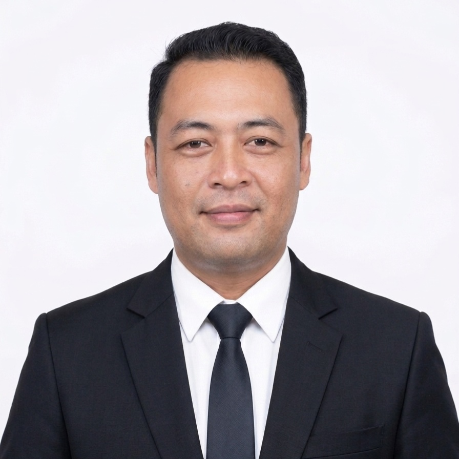

Berpengalaman lebih dari 12 tahun dalam market research, business analysis, enterprise architecture, digital transformation dan project management.
Years Experience
Digital Initiatives
Projects Delivered
Client Satisfaction

Saya memiliki pengalaman dalam bidang transformasi digital, analisis bisnis, pengembangan sistem informasi, manajemen proyek, serta tata kelola teknologi informasi. Selama perjalanan karier, saya terlibat dalam berbagai inisiatif yang bertujuan membantu organisasi meningkatkan efektivitas proses kerja, kualitas pengelolaan data, dan pemanfaatan teknologi untuk mendukung kebutuhan bisnis.
Saya percaya bahwa teknologi seharusnya menjadi alat yang memudahkan pekerjaan, mendukung pengambilan keputusan yang lebih baik, dan membantu organisasi mencapai tujuan mereka dengan cara yang lebih terstruktur, efisien, dan berkelanjutan.
Perjalanan profesional saya dimulai dari bidang market research dan berkembang ke area analisis bisnis, pengembangan sistem, manajemen proyek, serta transformasi digital. Pengalaman tersebut memberikan pemahaman yang lebih luas mengenai kebutuhan organisasi, proses bisnis, pemanfaatan teknologi, serta pentingnya kolaborasi antara bisnis dan teknologi.
Beberapa proyek yang pernah saya kerjakan mencakup analisis bisnis, transformasi digital, pengembangan sistem informasi, dokumentasi teknis, serta pendampingan implementasi solusi digital pada berbagai kebutuhan organisasi.
Pendampingan penyusunan kebutuhan bisnis, analisis proses bisnis, dan perencanaan implementasi solusi digital untuk meningkatkan efektivitas operasional organisasi.
Penyusunan business requirement, functional requirement, use case, workflow, serta dokumentasi kebutuhan sistem sebagai dasar pengembangan aplikasi.
Penyusunan blueprint teknologi informasi, arsitektur aplikasi, data, dan proses bisnis untuk mendukung strategi organisasi jangka panjang.
Pelaksanaan riset, pengolahan data, analisis pasar, serta penyusunan rekomendasi untuk mendukung pengambilan keputusan berbasis data.
Email : dawudsw0491@gmail.com
WhatsApp : 087830690013
GitHub : dawud0491-cell
LinkedIn : Dawud Satrio Wicaksono